Table of Contents
| 1 | System overview: the stack and the five ideas | @T1 |
| 2 | System architecture | @T2 |
| 3 | Hardware inventory and identification | @T3 |
| 4 | The physical layer: inside the SX1262 | @T4 |
| 5 | The link layer: budget, airtime, and propagation | @T5 |
| 6 | Channel sharing: collision avoidance and interference | @T6 |
| 7 | The protocol layer: Meshtastic and the channel contract | @T7 |
| 8 | The transport layer: Bluetooth LE and the Client API | @T8 |
| 9 | The application layer: display firmware | @T9 |
| 10 | Navigation mathematics | @T10 |
| 11 | Timing, liveness, and honesty semantics | @T11 |
| 12 | Range characterization: the two campaigns | @T12 |
| 13 | Extending the range | @T13 |
| 14 | Build, flash, and test procedures | @T14 |
| 15 | Verification record | @T15 |
| 16 | Failure modes and recovery (the scar catalog) | @T16 |
| A | Appendix A: acronyms and abbreviations | @TA |
| B | Appendix B: repository guide | @TB |
| R | References | @TR |
1. System overview: the stack and the five ideas
Two Heltec WiFi LoRa 32 V4 radios (callsigns SF and RG) run unmodified Meshtastic firmware 2.7.26 and exchange position, telemetry, and text over a private 915 MHz LoRa channel. Each radio serves one Waveshare ESP32-S3-RLCD-4.2 driver display running our custom firmware, connected over Bluetooth Low Energy using the Meshtastic Client API [2]. The displays decode the radio traffic into a live navigation UI. There is no phone, tower, or internet dependency anywhere in the chain.
Five ideas explain essentially every behavior and every failure this system has ever shown. They recur throughout this manual.
1.1 Three links, three kinds of link
The system carries data over three wireless links, and they are three different kinds of link. Being precise about this classification is the foundation of the whole layer stack, because each link obeys a different discipline and fails in a different way.
| Link | Kind | Direction | Radio technology | Who implements it |
|---|---|---|---|---|
| Satellites → radio | Broadcast reception | One-way, down only | GPS L1, 1575.42 MHz | The GNSS module (hardware) |
| Radio ↔ display | Connection-oriented client/server | Two-way | Bluetooth Low Energy, 2.4 GHz | Meshtastic (server) + our ble_link.cpp (client) |
| Radio ↔ radio | Connectionless broadcast | Two-way, symmetric | LoRa, 915 MHz ISM | Meshtastic (host MCU) + SX1262 (transceiver) |
The system never communicates to a satellite. GPS is receive-only: the constellation broadcasts ephemeris and atomic timestamps continuously, the GNSS module hears at least four satellites, solves the geometry, and emits the result as NMEA sentences over UART at 1 Hz. There is no uplink, no handshake, and no acknowledgment, which is why satellite count and sky view are the only variables that matter on that link. On the LoRa link the division of labor is equally sharp: the ESP32-S3 running Meshtastic is the host microcontroller, and the SX1262 is a peripheral transceiver it drives over a four-wire SPI bus plus a BUSY handshake line and an interrupt line. The radio chip modulates, demodulates, and buffers one packet at a time; every decision about what to send and when lives in Meshtastic on the ESP32.
1.2 The layer map
This manual is organized bottom-up, the way the signal itself is built, with the architecture first and operations last. Section 2 is the architecture: the boxes, the buses, the firmware structure, and why each decision was made. Section 3 identifies the hardware. Section 4 is the physical layer: the SX1262 silicon, its modems, state machine, modulation mathematics, and host bus. Section 5 is the link layer: the budget of decibels, the budget of airtime, and the propagation models that price the real world. Section 6 is channel sharing: how two transmitters coexist on one frequency with no coordinator. Section 7 is the protocol layer: Meshtastic's channel contract, the name-to-frequency hash, encryption, and provisioning. Section 8 is the transport layer: the Bluetooth LE Client API, walked state by state with the shipped code. Section 9 is the application layer: the display firmware, with its mathematics in Section 10 and its timing semantics in Section 11. Section 12 reports the range campaigns; Section 13, how to extend the range. Sections 14 through 16 are operations: procedures, the verification record, and the failure catalog. Each layer keeps one precise promise to the layer above it, and every failure in Section 16 is one layer quietly breaking its promise.
1.3 One packet through every layer
The following trace names every layer a single position update crosses, from the partner vehicle's sky view to the dart on this vehicle's screen. Everything above the LoRa hop happens in stock components; everything after ble_link is this project's firmware.
[Partner vehicle] [This vehicle] GPS satellites --L1 broadcast--> GNSS module GNSS --NMEA/UART, 1 Hz--> ESP32 (Meshtastic) Meshtastic: protobuf Position (~40 B), AES-256 encrypt ESP32 --SPI: WriteBuffer + SetTx--> SX1262 SX1262: CAD (listen) > FS (PLL lock) > TX chirps at SF11 / 250 kHz, CR 4:5, ~0.56 s on air ............... 915 MHz, kilometers ............... SX1262: RX, correlator digs the signal out from below the noise floor, FEC repairs, CRC checks, payload to buffer RxDone IRQ --DIO1--> ESP32 ESP32 --SPI ReadBuffer--> decrypt > node DB > queue on FromRadio > notify FromNum ble_link drains the queue over BLE nanopb decodes > node table > TrackerState > dead reckoning > nav math > dart on the RLCD
2. System architecture
This section is the complete architectural picture: what the boxes are, what wires and radio links join them, how the only custom firmware in the system is structured, and the rationale behind every major decision. It is the manual's version of docs/ARCHITECTURE.md, kept in agreement with it.
2.1 System context
The system is two identical vehicle installations. Positions flow symmetrically and nothing is a server. Each vehicle carries a radio node (Heltec WiFi LoRa 32 V4 running stock Meshtastic, with a GNSS module on its 8-pin connector) and a display node (Waveshare ESP32-S3-RLCD-4.2 running this project's firmware). Within a vehicle the two nodes speak Bluetooth LE across roughly one meter of cab; between vehicles the radios speak LoRa on the private 915 MHz channel, AES-256 encrypted, with mesh relaying available to any additional node that joins the channel. An optional relay node on high ground (Section 13) drops into this picture without any change to the vehicles.

2.2 Hardware architecture of one vehicle
| Node | Internal buses | Detail |
|---|---|---|
| Radio (Heltec V4) | GNSS → ESP32-S3 over UART (NMEA, 1 Hz); ESP32-S3 → SX1262 over SPI; OLED over I2C; SMA antenna port | Stock Meshtastic owns all of it. The 0.96-inch OLED is the free field-debug display: node count, GPS lock, frequency, and last-packet RSSI with zero work. |
| Display (Waveshare) | ESP32-S3 (16 MB flash, 8 MB PSRAM) → 4.2-inch reflective LCD over SPI, framebuffer in PSRAM | 400×300 black and white, reflective: sunlight-readable where a TFT washes out, fast enough for a rotating arrow where e-paper is not, near-zero power. |
| In-cab link and power | BLE 2.4 GHz between the nodes; vehicle 12 V → USB-C 5 V to both | The only antenna that should leave the cab is the LoRa antenna. GPS works on the dash with sky view; BLE crosses a meter of cab trivially. |
Both boards are ESP32-S3, so the team shares one toolchain. Vehicle power means no battery management in the product flow: both units are powered exactly when the vehicle runs, which is exactly when tracking is wanted (and which avoids the flat-battery failure class of Section 16).
2.3 Firmware architecture of the display node
The display firmware is FreeRTOS tasks joined by one shared structure. The protocol half (Bluetooth link, protobuf decode, node table) writes TrackerState; the interface half (navigation mathematics, renderer) reads it. One mutex, one writer, one reader, and the halves never call into each other. TrackerState is the contract between the two halves of the codebase, co-owned, changed only by one agreed commit (it is at version 5; Section 9.1 lists its fields).
Two structural choices do most of the de-risking. First, the simulator feed is a first-class component, not a hack: five scripted scenarios (approaching, crossing, stationary, stale, link-lost) drive the full interface with zero radios, so the entire UI including the arrow mathematics is testable on a bench. Second, pairing is configuration rather than code: the radio's BLE address is learned and stored in NVS automatically, so the same firmware binary runs in both vehicles and a replacement radio is adopted by a single scan (Section 8.2).
2.4 End-to-end data flow
One position's journey, across vehicles and down to the glass:
- The partner vehicle's GNSS module computes a fix once per second and streams it as NMEA over UART into its Meshtastic radio.
- Meshtastic builds a Position packet (lat/lon at 1e-7 degree, ground speed, track, GPS time) and broadcasts it over LoRa on the smart cadence of Section 7.4: roughly 0.56 s of airtime, AES-256 on the private channel.
- This vehicle's radio receives, decrypts, files the packet in its node database, queues it on FromRadio, and rings the FromNum doorbell.
- The display's protocol task drains the queue over BLE and nanopb decodes each frame into the node table (Section 8). The local vehicle's own position takes the same path minus the LoRa hop.
- The node table publishes
TrackerStateonce per second: self fix, partner fix, ages, link flag, clock. - The navigation engine computes distance (haversine), bearing, and arrow angle = bearing minus own course over ground (Section 10).
- The renderer redraws the reflective LCD at 2 Hz, and the driver sees the partner move.
End-to-end latency is approximately the LoRa airtime, half a second, which is negligible against the broadcast cadence. That asymmetry is why data age, not delivery confirmation, is the reliability metric shown to the driver: a newer position always supersedes an older one, so a lost packet costs seconds of freshness, never correctness.
2.5 The BLE link state machine
The riskiest component was made explicit as a state machine, implemented exactly in ble_link.cpp and walked through state by state in Sections 8.2 through 8.7:
SCANNING -> CONNECTING direct connect by remembered NVS address
(scan fallback adopts new radios)
CONNECTING -> BONDING connected (3 tries, 10 s each)
BONDING -> SUBSCRIBED encrypted (Just Works, no stored bond -- by design)
SUBSCRIBED -> DRAINING FromNum notify, after the want_config handshake
DRAINING -> SUBSCRIBED queue read until empty
any failure -----------> teardown -> SCANNING (exponential backoff)
The interface always renders, in every state, with last-known data plus an honest age and link flag. Link loss degrades the display; it never blanks it.
2.6 Why this architecture works
The custom-code surface is minimized. Everything hard about long-range radio, GPS parsing, broadcast scheduling, encryption, mesh relaying, regional radio timing, retry and backoff, ships tested inside stock Meshtastic. The custom firmware is a client application on a documented, versioned API, the same protobuf stream Meshtastic's own phone applications use, so it cannot silently rot. Nothing is forked.
Every interface is testable in isolation. GPS-to-radio is proven by the radio's own OLED; radio-to-radio by two phones running the Meshtastic app; the Client API by the Meshtastic Python CLI from a laptop before any firmware existed; the state-to-UI contract by the simulator with zero radios. This is what let four people work in parallel all semester: no one's test depended on anyone's unfinished code.
The vehicle environment drove the component choices. A reflective LCD because dashboards live in sunlight; heading from GPS course-over-ground because a magnetometer inside a steel vehicle is unreliable and a driving use case is usually moving; a dedicated display because off-grid means no phone dependency; vehicle power because the tracking window and the ignition window are the same window; connectionless broadcasts without acknowledgments because staleness, which the UI displays, is the honest reliability metric for superseding data.
It degrades gracefully at every failure point. Partner out of range: the arrow holds the last fix and the age counts up. Own GPS lost: computation continues from the last own fix, flagged. BLE drop: the link-lost banner shows while the state machine re-scans automatically. Stationary: the compass falls back to north-up. Terrain in the way: any mesh node relays automatically within the hop limit.
It scales without redesign. A third vehicle is a third radio on the same channel; the node table already tracks multiple nodes, so partner selection generalizes to partner cycling. A base-camp node or a rim repeater (Section 13) joins the same mesh for free.
3. Hardware inventory and identification
| Unit | Identity | Key facts |
|---|---|---|
| Radio SF | Node !49b5ead4, BLE MAC 8c:fd:49:b5:ea:d5 | Heltec V4: ESP32-S3 MCU, Semtech SX1262 transceiver [1], u-blox GNSS, OLED status screen, lithium cell. Pairs with Display 1. bluetooth.mode NO_PIN. |
| Radio RG | Node !49b5bb5c, BLE MAC 8c:fd:49:b5:bb:5d | Same hardware. Pairs with Display 2. bluetooth.mode NO_PIN. |
| Display 1 | USB serial A4:CB:8F:D0:7D:40 | Waveshare ESP32-S3-RLCD-4.2: reflective LCD 400x300, sunlight readable, no backlight; runs our firmware. |
| Display 2 | USB serial 94:A9:90:DD:14:3C | Identical firmware; remembers RG in NVS after its first scan. |
8C:FD:49. Always check the SER= field of the COM port before any upload. Flashing a radio with display firmware erases its Meshtastic and requires factory recovery (Section 16, entry 8).Enclosures: radios ride in community-printed cases; the display case is the AWSW "Symmetrical case" (Printables model 1610004, CC BY-NC 4.0) [6], printed in PETG for dashboard heat tolerance, fastened with four M2.5x6 screws. Six millimeters maximum: longer screws press on the panel glass.
4. The physical layer: inside the SX1262
Everything in this section happens inside one 4×4 mm chip. The treatment follows the Semtech SX1261/2 datasheet revision 2.2 [1] closely, with page citations, because the datasheet is the authority every claim in the project's range and airtime arguments ultimately rests on. A longer companion walk-through with verbatim firmware quotations is kept in the repository as docs/RADIO_PHY_DEEP_DIVE.md.
4.1 Anatomy of the transceiver
The SX1262's internal block diagram repays a careful read, because the entire physical layer lives inside it. On receive, the antenna signal passes through the matching network into a low-noise amplifier, is mixed down from 913 MHz by the phase-locked loop, digitized, and handed to the LoRa modem; the protocol engine assembles packets into the data buffer, which the ESP32-S3 drains over SPI. The PLL matters beyond the signal path: when Meshtastic computes a frequency from the channel name (Section 7.2), this synthesizer is the hardware that gets programmed, and the OLED frequency readout this manual treats as ground truth is a report of that programming.
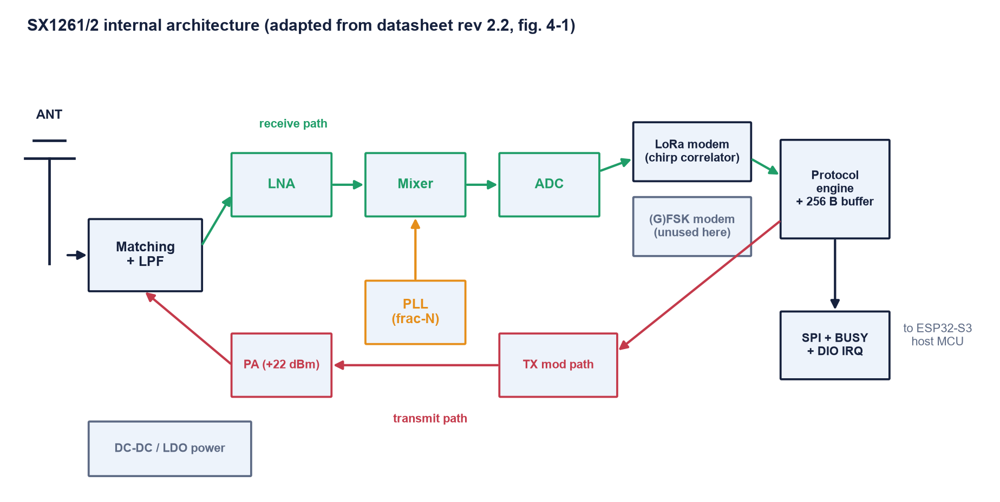
Two details of that walk repay attention. First, for bandwidths up to 250 kHz, which includes this system's operating point, the receiver performs a double conversion: analog down to a low intermediate frequency, then digitally to baseband, which improves image rejection; only the 500 kHz mode converts directly to zero IF (datasheet p. 39). Second, from the analog-to-digital converter onward everything is mathematics: the LoRa modem correlates the incoming samples against the known chirp patterns, and that correlation is the processing gain that lets the chip decode below the noise floor. The power block in the corner of the diagram, a DC-DC converter and a low-dropout regulator, is why the entire receive chain runs on roughly 4.2 mA, which in turn is why battery soak tests are uneventful.
4.2 One front end, two modems: why LoRa, not FSK or LR-FHSS
The SX1262 contains two complete modems sharing one RF front end (datasheet sec. 6, p. 38): a LoRa modem and a (G)FSK modem, each with its own packet engine and frame format. The host selects one with SetPacketType(), the first command issued before any frequency or modulation configuration; Meshtastic selects PACKET_TYPE_LORA, and the FSK modem sits beside it, powered but idle, for the life of this project.
The choice is defensible, not merely inherited. FSK encodes bits as frequency shifts and requires the signal to be stronger than the noise to demodulate; it exists on this chip for legacy protocols and high data rates, 0.6 to 500 kb/s (sec. 6.2.1, p. 43). LoRa's chirp spread spectrum demodulates below the noise floor; at this system's SF11 the demodulator works down to a signal-to-noise ratio of -17.5 dB (Table 6-1, p. 39), and that sub-noise margin is, directly, the kilometers of range measured in Section 15. A revealing datasheet detail (p. 38): the LoRa modem rejects a co-channel GMSK/FSK interferer up to 19 dB stronger than itself, so LoRa and FSK users can share a band and barely notice each other, which is spread-spectrum orthogonality in action.
The chip also supports Long Range FHSS (sec. 6.3, pp. 49-50), a frequency-hopping GMSK mode that nearly matches SF12's link budget and is used for direct-to-satellite LoRaWAN uplinks. The fine print disqualifies it here: the silicon provides only the modulation and autonomous hop timing, while frame construction, forward error correction, whitening, interleaving, and hop-sequence computation are the host's responsibility, and Meshtastic implements none of that. If anyone asks whether this system could talk to satellites, LR-FHSS is the honest door it would go through, and it is a different project.
4.3 The operating-mode state machine: one broadcast, traced
The transceiver is always in exactly one of the circuit modes below, and the diagram contains no state in which the chip listens and transmits at once. That single fact is the physical root of the airtime discipline in Section 5.2: a node spending 0.56 s transmitting is deaf for all of it, so simultaneous transmissions on one channel simply lose each other's packets. Section 6 explains how the protocol lives with that.
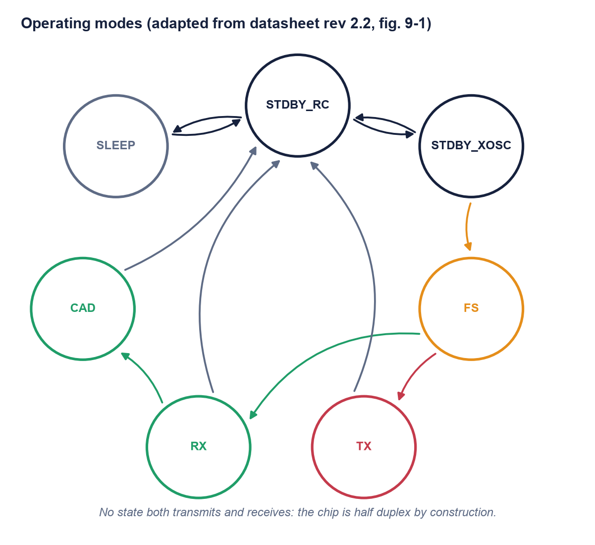
Tracing one Meshtastic position broadcast onto that mode diagram makes the machine concrete (sec. 9.9, p. 64):
- Idle is RX. Meshtastic parks the radio in continuous receive, because a mesh must always be listening; the BUSY line falls as soon as the receiver is up (sec. 8.3.1, p. 55).
- Decision to send. When the smart-broadcast logic fires, the ESP32 writes the roughly 40 protobuf bytes into the chip's buffer with
WriteBuffer(), sets the buffer base addresses and packet parameters, then: - CAD, listen before talk (sec. 6.1.5, p. 41). Below the noise floor an RSSI measurement cannot sense the channel, so the chip provides a dedicated channel activity detector: it runs the LoRa correlator for 1 to 16 symbols and raises an interrupt if it hears LoRa preamble or data symbols. This detector is the physical mechanism underneath the CSMA logic of Section 6.
SetTx(). The chip passes through the FS mode while the PLL locks onto the channel frequency, ramps the power amplifier, and transmits: a 16-symbol preamble, an explicit header protected at coding rate 4:8 with its own CRC, the payload at 4:5, and the payload CRC (frame format sec. 6.1.3, pp. 40-41). Roughly half a second later:- TxDone. The DIO1 interrupt wakes the ESP32, the chip auto-returns to standby, and Meshtastic immediately puts it back in RX.
4.4 The four modulation knobs and the time on air (Ideas 3 and 5)
LoRa is a chirp spread spectrum modulation: each symbol is a frequency sweep across the full channel, and the information is carried in the sweep's starting offset. A spreading factor of 11 provides 211 = 2048 possible offsets, so each symbol carries 11 bits. The duration of one symbol is the number of chips divided by the bandwidth:
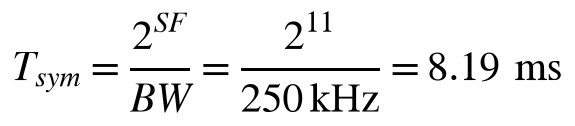
SetModulationParams() takes exactly four parameters, and the LONG_FAST preset fixes all four:
| Knob | Value here | What it does | Datasheet |
|---|---|---|---|
| Spreading factor | SF11 | 211 = 2048 chips per symbol; sets the demodulation floor at -17.5 dB SNR | Table 6-1, p. 39 |
| Bandwidth | 250 kHz | Chip rate equals bandwidth; symbol rate is BW / 2SF | Sec. 6.1.1.2, p. 39 |
| Coding rate | 4:5 | Forward error correction: every 4 data bits travel as 5 | Table 6-3, p. 40 |
| LDRO | Off | Low data rate optimization; see below | Sec. 6.1.1.4, p. 40 |
De-chirping integrates 2048 chips coherently, which is why the SX1262 demodulates at signal-to-noise ratios down to -17.5 dB at SF11 [1]. The coding rate of 4:5 adds one parity bit for every four data bits, which allows the receiver to repair short bursts of errors. The number of symbols needed to carry a payload follows Semtech's published formula [4], in which PL is the payload length in bytes, H is zero when an explicit header is present, DE is the low-data-rate optimization flag, and CR equals 1 for rate 4:5. The formula converts a byte count into a symbol count: the numerator counts the payload bits plus overhead, the denominator is the number of bits each symbol carries, and the ceiling and the factor of (CR + 4) account for forward error correction:
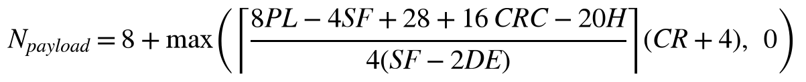
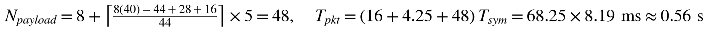
Each position update therefore occupies roughly 0.56 seconds of air. This single number drives the entire cadence and airtime design presented in Sections 4.2 and 9: it is the reason the system reports every ten seconds rather than every second.
Low data rate optimization deserves a note because the datasheet gives an exact rule for it: LDRO sacrifices two bits per symbol to help the receiver track very slow symbols, and is recommended whenever the symbol time reaches 16.38 ms. This system's symbol is 8.19 ms, exactly half the threshold, so LDRO is off for LONG_FAST; at SF11 over 125 kHz, or at SF12, it would switch on, and Meshtastic's driver applies the rule automatically. A second calibration note from the datasheet (sec. 6.1.6, pp. 41-42) concerns the RSSI figures used throughout the verification record: the RSSI the chip reports is skewed by everything between the antenna and the die, and the chip ships calibrated for the 868/915 MHz reference design, which the Heltec board follows closely. The practical consequence is that range logs should be read for RSSI trends, not treated as absolute dBm truth.
4.5 The data buffer: where the forty bytes live
Transmit and receive share one 256-byte RAM inside the chip, with base addresses set by SetBufferBaseAddresses(), both zero by default (sec. 7, pp. 51-52). On transmit the packet engine reads the payload length from the TX base address and streams it into the modem; on receive, payload bytes land at the RX base address and GetRxBufferStatus() tells the host where they are and how many arrived. Three details are worth recording. The buffer survives every mode except sleep, which clears it. Packets that fail CRC are still written to the buffer, so a host may inspect corrupted data; Meshtastic simply drops them, but the option shapes how the driver handles interrupts. And a position packet occupies roughly 40 of the 256 bytes, one packet at a time: the chip is not a queue. Meshtastic's packet queues live one layer up on the ESP32, and the FromRadio queue the display drains lives another layer above that. Three buffers at three layers, each sized to its job.
4.6 The host interface: SPI, BUSY, and DIO1
The ESP32-S3 drives the transceiver over SPI mode 0 at up to 16 MHz with a command-based protocol: an opcode byte plus parameters, where commands configure and control and WriteBuffer/ReadBuffer move payloads (sec. 8.2, p. 53). Every exchange is gated by the BUSY line: commands may be issued only while BUSY is low, and after each command the chip's internal CPU raises BUSY within 600 ns until the state transition completes (sec. 8.3.1, p. 55). That handshake is why the driver never guesses whether the radio is ready. Waking from sleep, the chip-select falling edge itself triggers the boot, and the host must wait for BUSY to fall before the first command (sec. 8.2.2, p. 54). Events travel the other way on DIO1: TxDone, RxDone, CAD results, and timeouts arrive as interrupts that the driver's service routine reads and clears (sec. 8.5, p. 58). The design is event-driven at the silicon level, the same philosophy as the FromNum doorbell two layers up in Section 8: nothing in this stack polls when it can be interrupted. On the Heltec board these seven lines, four SPI signals plus BUSY, DIO1, and NRESET, are the actual copper between the two chips.
4.7 The regulatory envelope in one line of code
The legal frame around all of the above is set by a single provisioning command, --set lora.region US, which selects one row of Meshtastic's region table in RadioInterface.cpp:
RDEF(US, 902.0f, 928.0f, 100, 0, 30, true, false, false)
That one line encodes the whole envelope: 902 to 928 MHz, the FCC Part 15.247 ISM band; a 100 percent duty cycle allowance, unlike Europe's 10 and 1 percent bands; and the +30 dBm power ceiling that Section 5.1's link budget spends. A radio whose region is UNSET has no envelope and refuses to transmit at all, which this project confirmed the hard way during the recovery re-flash recorded in Section 16.
4.8 Claim-to-page map
Every physical-layer claim this manual makes traces to a page of the Semtech SX1261/2 datasheet revision 2.2 [1]. The table is the audit trail.
| Claim | Datasheet location |
|---|---|
| SF11 SNR limit -17.5 dB; 2048 chips per symbol | Table 6-1, p. 39; receiver specs sec. 3.5.3, p. 20 |
| Symbol time T = 2SF/BW = 8.19 ms | Sec. 6.1.1.1-6.1.1.2, p. 39 |
| Time-on-air formula deferred to drivers and AN1200.22 | Sec. 6.1.4, p. 41 |
| CAD as the carrier sense for CSMA | Sec. 6.1.5, p. 41 |
| LDRO rule: recommended at symbol time 16.38 ms and above | Sec. 6.1.1.4, p. 40 |
| Explicit header at CR 4:8 with its own CRC | Sec. 6.1.3.1, p. 41 |
| FSK modem present, 0.6-500 kb/s, unused here | Sec. 6.2, pp. 43-48 |
| LR-FHSS modulation-only support; host does the modem work | Sec. 6.3, pp. 49-50 |
| 256-byte buffer, RX/TX pointers, sleep clears it | Sec. 7, pp. 51-52 |
| SPI 16 MHz mode 0; BUSY within 600 ns; wake timing | Sec. 8.2-8.3, pp. 53-55 |
| Operating-mode diagram (reset, standby, FS, TX, RX) | Sec. 9.9, p. 64; modes detail sec. 9.1-9.8, pp. 60-63 |
| +22 dBm PA on the SX1262 die | Sec. 4.4.2, p. 28; TX specs sec. 3.5.4, p. 22 |
| Fractional-N PLL carrier synthesis | Sec. 4.2, p. 26 |
| Block diagram (LNA, mixer, ADC, modems, engine, SPI) | Figure 4-1, p. 23 |
| 19 dB co-channel GMSK/FSK rejection | p. 38 |
5. The link layer: budget, airtime, and propagation
5.1 Link budget
A link budget adds every gain and subtracts every loss between the transmitter and the receiver, and then asks whether the power that arrives is still above the receiver's sensitivity. The received power is the transmitted power plus the two antenna gains minus the free-space path loss, where the path loss grows with both distance and frequency:
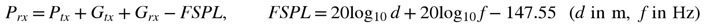
The table below lists the value each term takes in this system and where that value comes from.
| Term | Value | Source |
|---|---|---|
| Transmit power P_tx | +30 dBm (1 W) | Config; US legal maximum for this band [5] |
| Antenna gains G_tx, G_rx | ~0 dBi each | Stock quarter-wave whips |
| Receiver sensitivity S | -131 dBm | SX1262 datasheet at SF11 / 250 kHz [1] |
| Total budget P_tx - S | 161 dB | Loss the link can absorb before decode fails |
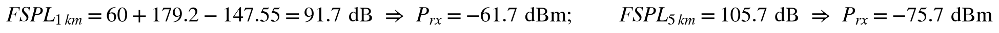
Even at 5 km the received signal of -75.7 dBm sits 55 dB above the receiver's sensitivity in free space. Streets are not free space, however: we reserve 20 dB of that headroom for terrain, buildings, and fading, which places the honest design range at 3 to 5 km. As a measured baseline, a round-trip traceroute at desk range reports 5.75 to 7.25 dB of signal-to-noise ratio in each direction. Spare margin converts into distance through the doubling rule, which follows from the logarithm in the path loss formula: every 6 dB of margin roughly doubles the achievable range:
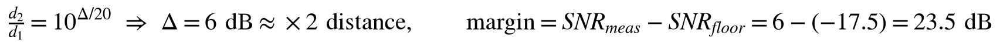
5.2 Airtime budget (Idea 5)
Meshtastic suppresses position broadcasts once channel utilization rises above roughly 25 percent [2], so the design must show that normal operation stays below that throttle. The utilization is simply the fraction of each reporting period the channel spends carrying packets: the number of transmitting nodes multiplied by the time on air of one packet, divided by the reporting cadence. With two vehicles reporting a 0.56-second packet every ten seconds, the arithmetic works out as follows:
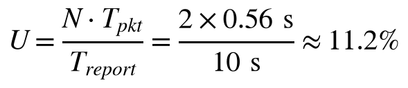
The default mesh role relays every overheard packet (hop limit 3); with exactly two nodes every relay is waste and doubles the spend to roughly 22 percent, brushing the throttle precisely when both vehicles move. Both radios therefore run role CLIENT_MUTE (receive and send everything, relay nothing), measured to halve idle utilization from 9-13 percent to 5-6 percent. Revert both to CLIENT if a third node or repeater ever joins.
5.3 Propagation models and the honest range prediction
The link budget of Section 5.1 says how much path loss the link can absorb; propagation models say how fast the real world spends it. Three models bracket the answer, and the range campaigns of Section 12 then tested them.
Free space. FSPL = 32.45 + 20 log10(fMHz) + 20 log10(dkm), which at 915 MHz is 91.7 dB at 1 km, 109.7 dB at 8 km, 125.6 dB at 50 km, all comfortably inside the 161 dB budget. Free space predicts hundreds of kilometers; it describes ridge-to-ridge line of sight, and it is the quantitative reason a relay node on high ground is so effective (Section 13).
Two-ray ground reflection. With both antennas at car height, beyond the breakpoint distance the ground reflection cancels the direct wave and loss grows at 40 log10(d) instead of 20: L ≈ 40 log10(d) - 20 log10(htxhrx). At 2 m antenna heights this gives roughly 120 dB at 2 km, 136 dB at 5 km, 148 dB at 10 km: single-digit miles, which is what the flat-road test measured. The model also quantifies the cheapest upgrade in the system: raising an antenna from 1 m to 3 m is worth roughly 19 dB in this regime, more than the entire transmit-power budget, which is why antenna height beats antenna gain and why the rim measurement of Section 12.2 beat the flat-ground figure.
Terrain. A single ridge in the path adds 10 to 30+ dB of knife-edge diffraction loss, and dense vegetation adds up to half a dB per 100 m. Terrain loss arrives as a step, not a slope, which is the analytical root of the cliff behavior documented in Section 12: LoRa links in broken country are intermittent, not fading.
The honest prediction that follows, written before the measurements: two to eight kilometers typical at ground level, tens of kilometers with line of sight, possibly under one kilometer in a deep valley. The measured envelope, 0.5 to 4.7 miles depending on terrain and antenna height, sits inside it.
5.4 The system as a telecommunications design
Treated as a communications system, the design is a deliberate exchange of capacity for margin. The application needs roughly 50 bytes every 30 seconds, about 13 bit/s of goodput, running at around one percent of even LONG_FAST's 1.07 kb/s capacity. Everything else is spent on link margin. The preset ladder makes the trade explicit:
| Preset | SF / BW | Bit rate | Sensitivity | Role |
|---|---|---|---|---|
| SHORT_FAST | SF7 / 250 kHz | ~11 kb/s | ~-121 dBm | Short range, fast |
| LONG_FAST (used) | SF11 / 250 kHz | ~1.07 kb/s | ~-129 to -131 dBm | The shipping operating point |
| LONG_SLOW | SF12 / 125 kHz | ~0.18 kb/s | ~-137 dBm | The reserve: ~8 dB more margin at 6x the airtime |
Each spreading-factor step buys roughly 2.5 to 3 dB of margin at half the rate; LONG_SLOW is the knob still in hand if a future route demands it, at six times the airtime per packet. In one sentence, the framing the final report uses: a 13 bit/s application delivered over a chirp-spread-spectrum physical layer operating up to 17.5 dB below the noise floor, an ALOHA-class MAC at single-digit channel utilization, and a flooding mesh network layer, with the link budget verified by field measurement across town, open-road, and canyon terrain.
6. Channel sharing: collision avoidance and interference
The half-duplex state machine of Section 4.3 raises the classic edge case, posed by the project's professor in week six: both radios power on at the same instant, both want to announce themselves, same frequency, no coordinator. Who talks first, and why does the channel not crash? This section is the complete answer; docs/COLLISION_AVOIDANCE.md is its repository twin.
6.1 The short answer
Nobody is assigned to talk first, and that is the design. LoRa is half duplex on a shared channel, so Meshtastic adopts the philosophy of classic Ethernet and ALOHA: do not try to prevent every collision; make collisions cheap, detectable, and non-repeating. Three mechanisms stack, and one physics effect softens the worst case.
6.2 Mechanism 1: listen before talk
Before transmitting, a node runs the SX1262's channel activity detection (Section 4.3, step 3): the correlator listens for one to sixteen symbol times for the signature of LoRa chirps. Detection is by pattern, not power, because a LoRa signal 15 dB below the noise floor is invisible to an RSSI measurement; correlation is the only carrier sense that works down there [1]. If the channel is busy the node defers. In the common case the collision therefore never happens: whichever radio keyed up even milliseconds earlier wins the channel, and the other hears its preamble and waits. That is the literal answer to who talks first: the first to start, by however small a margin.
6.3 Mechanism 2: random backoff breaks the tie
The true edge case is both radios passing CAD in the same symbol window and transmitting together. Both packets may be lost; nothing crashes, because a LoRa collision is just two frames that fail CRC. The cure is that every transmission is scheduled with a random delay drawn from a contention window, redrawn on every retry, weighted by SNR so that distant nodes rebroadcast first. Two nodes that collided once almost certainly draw different delays the next time: with an N-slot window the repeat probability is 1/N, then 1/N2, collapsing geometrically. Determinism would be the dangerous choice here; two identical radios booted together on a fixed schedule would collide forever. The randomness is the feature.
6.4 Mechanism 3: nothing important is sent once
Directed packets (position requests, direct messages) are acknowledged and retransmitted with fresh backoff. Broadcasts (NodeInfo, position, telemetry) are not acknowledged but are periodic: NodeInfo on boot and on schedule, positions every 10 to 60 seconds, telemetry every 300. A collided boot announcement costs one cycle of patience. Robustness by repetition is why the simultaneous-boot case heals within seconds even when the first exchange is lost; on this bench, two radios power-cycled together appear in each other's node lists inside a minute, every time.
6.5 The physics bonus: capture
LoRa receivers exhibit capture: when two overlapping transmissions differ by roughly 6 dB at the receiver, the stronger demodulates correctly and only the weaker is lost [4]. Two-vehicle geometry is almost never symmetric, so many theoretical collisions still deliver one packet. De-chirping also makes a non-LoRa interferer look like uncorrelated noise, and even another LoRa signal collides destructively only when it shares the same spreading factor and bandwidth, which narrows the set of dangerous signals considerably.
6.6 The professor's scenario, walked
- t = 0: both radios boot, both prepare NodeInfo.
- Both draw a random transmit delay; they are already unlikely to be simultaneous.
- Each runs CAD. If radio A started first, B hears the preamble and defers; B transmits after A finishes. No collision; first was decided by the random draw.
- Worst case: both pass CAD in the same window and transmit together. Both packets may be lost unless capture saves the stronger. Neither radio crashes; each simply hears no response.
- Each reschedules with a new independent delay; the repeat probability shrinks multiplicatively each round.
- Even if several NodeInfos in a row were lost, the periodic rebroadcast guarantees discovery within one cycle. Measured: mutual discovery well under a minute, every trial.
6.7 Interference in the shared 902-928 MHz band
| Source | Effect on this system | Mitigation already in the design |
|---|---|---|
| Another Meshtastic group on the same slot | Real LoRa collisions; their packets are undecodable noise here (different key) but occupy airtime | CSMA defers to any LoRa preamble; the low duty cycle leaves room; worst case, rename the channel and move slots (Idea 2) |
| The public LongFast mesh | None in-band: slot 19 is 906.875 MHz, 6 MHz away | A private channel name is a private slot by construction |
| Non-LoRa ISM devices | Momentary noise-floor rise; a strong burst costs one packet | 23+ dB of measured SNR margin at close range; retransmission and periodicity |
| This system's own two nodes | Rare first-cycle collision | CSMA, random backoff, capture, periodicity, as above |
A demonstration that earns its grade: power-cycle both radios together ten times and log time-to-mutual-discovery from the OLED node lists (expect under a minute each run), then watch channel utilization through a busy exchange to show the airtime discipline holding; 5 to 6 percent idle was measured in CLIENT_MUTE.
7. The protocol layer: Meshtastic and the channel contract
7.1 The contract (Idea 1)
| Layer | Our value | If mismatched |
|---|---|---|
| Frequency | Slot 43 = 912.875 MHz, derived from channel name "Group9" | Radios tuned apart; zero coupling |
| Modulation | LONG_FAST preset: SF11, 250 kHz bandwidth, coding rate 4:5 | Chirps undecodable |
| Channel encryption | AES-256 pre-shared key, distributed in the channel URL | Packets heard, payloads dropped |
| Node identity | Curve25519 public keys exchanged via NodeInfo | Direct messages fail silently or NAK |
7.2 Frequency slot derivation (Idea 2)
Meshtastic does not store a frequency; it computes one. The United States band plan runs from 902 to 928 MHz, which at a channel width of 250 kHz divides into 104 slots. The firmware hashes the primary channel name and takes the result modulo the slot count, so the operating frequency is a deterministic function of the name:
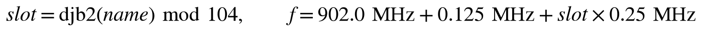
The hash function is djb2, a simple string hash that starts from the constant 5381 and, for each character of the name, multiplies the running value by 33 and adds the character's code; the slot index is that value modulo 104. The formula can be calibrated against a known constant: djb2 of "LongFast" modulo 104 equals 19, which corresponds to 906.875 MHz, the published United States default [2]. Applying the same arithmetic to our channel name "Group9" yields slot 43, and substituting slot 43 into the slot formula gives the frequency that both of our radios must display:
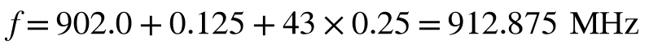
7.3 Security model
- Channel traffic (positions, broadcasts, canned texts): AES-256 with a 256-bit pre-shared key generated at channel creation and distributed only inside the provisioning URL over USB [2]. The key never crosses the air.
- Direct messages and position requests: additionally encrypted per node with Curve25519 public keys exchanged via NodeInfo. A stale stored key makes direct traffic fail one-way and silently (Section 16, entry 4).
- What an eavesdropper on slot 43 learns: packet headers are cleartext, so node IDs, timing, and signal levels are visible. Payloads are not. Existence and schedule leak; content and location do not.
- Key custody: the channel URL embedding the key lives in the private team repository by deliberate decision. Never publish it. Rotating to a fresh channel takes minutes and orphans the old key.
7.4 Radio configuration reference and provisioning
| Setting | Value | Rationale |
|---|---|---|
channel (primary) | Group9, position precision 32 | Private slot 43; full-resolution positions (the channel default of 13 truncates every broadcast to a ~6 km grid) |
lora.region | US | 902 to 928 MHz plan [5] |
lora modem preset | LONG_FAST | SF11 / 250 kHz / 4:5, the range versus rate compromise |
lora.tx_power | 30 | Legal maximum; margin is range |
position.position_broadcast_secs | 60 | Parked cadence with a fix |
position.broadcast_smart_minimum_interval_secs / _distance | 10 / 20 | Moving cadence: 10 s AND 20 m must both pass |
position.gps_update_interval | 10 | Must be ≤ the smart interval or stale fixes re-broadcast |
telemetry.device_update_interval | 300 | Liveness floor; keeps counters honest at ~0.17 percent airtime |
device.role | CLIENT_MUTE | Two-node mesh: no relaying (Section 5.2) |
bluetooth.mode | NO_PIN | Just-Works pairing for the display; bonded-mode radios stop advertising and become unreachable |
| Canned messages | 21 full-word presets | Hard firmware cap: the whole set is one string of at most 200 characters (ours uses 194) |
Provisioning procedure
The command sequence below takes a radio from factory state to full team specification using the Meshtastic command-line tool over USB. The first command applies the channel URL, which carries the channel name, the encryption key, and the position precision in one string; the placeholder <CHANNEL-URL> stands for the actual URL, which is stored in hardware/README.md in the private team repository and must never be published. The remaining commands apply the position cadence, the telemetry heartbeat, the mesh role, the Bluetooth mode, the radio's callsign, and the canned message list described in the table above.
# The channel URL (containing the key) is in hardware/README.md. Never publish it. python -m meshtastic --port COMx --seturl "<CHANNEL-URL>" python -m meshtastic --port COMx --set position.position_broadcast_secs 60 \ --set position.broadcast_smart_minimum_interval_secs 10 \ --set position.broadcast_smart_minimum_distance 20 \ --set position.gps_update_interval 10 \ --set telemetry.device_update_interval 300 \ --set device.role CLIENT_MUTE python -m meshtastic --port COMx --set bluetooth.mode NO_PIN # radio that serves a display python -m meshtastic --port COMx --set-owner-short "SF" # or "RG" python -m meshtastic --port COMx --set-canned-message "OK|Yes|No|Hello|..." # full set in hardware/README.md
Verification is part of the procedure, not optional: read every value back with --get, confirm the OLED LoRa screen reads 912.875, then power-cycle and confirm 912.875 survives. An unsaved channel write is the classic silent revert (Section 16, entries 1 and 6).
8. The transport layer: Bluetooth LE and the Client API
Of the three links classified in Section 1.1, this is the only connection-oriented one: a client/server session over Bluetooth Low Energy, with the radio as server and the display as client. The decision that made the display feasible in one semester is that Meshtastic publishes its phone-application interface as a documented GATT service, the Client API [2]; anything that speaks protocol buffers over its three characteristics is a legitimate client, so a custom dashboard display attaches at the same socket as the official phone app, and no radio firmware changes.
8.1 The GATT service
| GATT item | UUID | Role |
|---|---|---|
| Service | 6ba1b218-15a8-461f-9fa8-5dcae273eafd | Meshtastic Client API |
| ToRadio | f75c76d2-129e-4dad-a1dd-7866124401e7 | Write: commands and outbound packets |
| FromRadio | 2c55e69e-4993-11ed-b878-0242ac120002 | Read until empty: config dump and inbound packets (firmware 2.x UUID) |
| FromNum | ed9da18c-a800-4f66-a670-aa7547e34453 | Notify: "new data queued", triggers a drain |
On connect: write want_config_id, drain the configuration dump (node DB, MyInfo), then drain on every notify. The radio advertises only from boot until its first BLE disconnect, so the product flow is ignition-on: power the radio and display together; the display fires direct connect attempts and catches the boot window. The radio's address persists in NVS; a scan that finds any Meshtastic service re-learns it, which is how replacement units pair automatically.
The transport's design philosophy mirrors the silicon two layers down. FromNum is a doorbell, not a mailbox: the notification carries only a packet counter, and the data itself is pulled by reading FromRadio until it returns empty. That read-until-empty discipline makes the client stateless about queue depth and immune to missed notifications, because any doorbell, however late, triggers a complete drain. Flow control is therefore entirely client-paced, which matters on a display that must also hit its render deadlines: the drain runs in the Bluetooth task, and the renderer never blocks on the radio. The session is also the system's only stateful link, so it is the only one that can be half-dead, and Section 16 records the reconnect hardening that state made necessary.
8.2 Scanning: address first, scan second
The link does not start with a radio scan. The radio's BLE address is persisted in NVS, and the first move is always a direct connect to that remembered address; only when that fails does a 1.5-second active scan look for any device advertising the Meshtastic service UUID, and whatever the scan finds becomes the new remembered radio:
// 1) Direct connect to the remembered radio. if (s_have_addr) { ok = try_connect(s_known_addr); if (!ok) teardown(); } // 2) Scan pass: first pairing, or the radio was replaced. if (!ok) { NimBLEScan *scan = NimBLEDevice::getScan(); scan->setActiveScan(true); NimBLEScanResults results = scan->getResults(1500, false); ... if (dev->isAdvertisingService(NimBLEUUID(SVC_UUID))) found = dev; ... if (found) { remember_radio(found->getAddress()); ok = try_connect(s_known_addr); } }
Address-first is bench-proven necessity, not preference: the radio general-advertises only from boot until its first BLE disconnect, and a previously paired radio may send only directed advertisements that a scan cannot see. A direct connect by address catches both cases; a scan alone would never reconnect. This is also why the product flow is ignition-on: both units power together and the display catches the radio's boot window. The scan still exists for first pairing and for radio replacement: swap in a different radio and no reflash is needed, the scan adopts it and NVS learns the new address. Failures back off exponentially (1, 2, 4, 8 s cap), and the state publisher keeps feeding the UI so the screen reads LINK SEARCHING instead of freezing.
8.3 Connecting: three tries, ten seconds each
s_client->setConnectTimeout(10000); for (int attempt = 1; attempt <= 3 && !connected; attempt++) { connected = s_client->connect(addr); if (!connected) vTaskDelay(pdMS_TO_TICKS(250)); }
The advertising window can be brief; one attempt misses it too often and an unbounded wait would stall the state machine. Three paced attempts inside one scanning pass is the bench-measured sweet spot. Initialization also raises BLE transmit power to +9 dBm, because the default proved marginal for connect handshakes, and sets MTU 517 so a full protobuf frame fits in one read.
8.4 Securing: Just Works, no stored bond, by design
NimBLEDevice::setSecurityAuth(/*bond*/ false, /*mitm*/ false, /*sc*/ true); NimBLEDevice::setSecurityIOCap(BLE_HS_IO_NO_INPUT_OUTPUT); if (!s_client->secureConnection()) return false;
The radio runs bluetooth.mode NO_PIN, so pairing is BLE Just Works: an encrypted session (LE Secure Connections) negotiated on every connect, no PIN dialog, no stored bond. The alternative was rejected on hard evidence: a bonded Meshtastic peripheral stops general advertising, becoming undiscoverable to everyone including, after certain resets, its own peer, with factory reset the only cure. Re-pairing on every connect is fast, still encrypted, and sidesteps the trap entirely; MITM protection is off because the threat model is two boards a meter apart in a locked vehicle. The same reasoning is behind the firmware's hard rule: never deleteAllBonds() at boot. The failure signature when the radio's mode reverts from NO_PIN is documented as scar catalog entry 10.
8.5 Subscribing: the doorbell and the handshake
s_fromNum->subscribe(true, notify_cb); uint32_t nonce = (uint32_t)esp_random(); proto_encode_want_config(buf, sizeof(buf), nonce); s_toRadio->writeValue(buf, n, /*response*/ true);
Subscribing to FromNum asks the radio to notify whenever its queue has data: event-driven, no polling, the same philosophy as the DIO1 interrupt line four layers down (Section 4.6). The one command ever written, want_config_id with a random nonce, asks the radio to replay its identity and its whole node database, then echo the nonce back; when the nonce returns, the snapshot is complete. The display therefore never starts blind, and the nonce prevents mixing dumps across reconnects. The notify callback does exactly one thing, set a flag, because it runs on the BLE stack's own task where a GATT read can deadlock the stack. Flag there, drain in the task.
8.6 Draining: read until empty
for (;;) { NimBLEAttValue v = s_fromRadio->readValue(); if (v.size() == 0) break; // radio says: queue empty proto_decode_from_radio(v.data(), v.size()); }
FromRadio behaves like a vending machine: each read hands over the next queued frame, and a zero-length read means empty. One notify can cover five queued frames (typical after the config dump or a burst of mesh traffic), so read-until-empty is what guarantees the client never lags the queue; it also makes the client stateless about queue depth and immune to missed notifications, since any doorbell, however late, triggers a complete drain.
8.7 Failure: one teardown, one recovery path
static void teardown(void) { if (s_client) NimBLEDevice::deleteClient(s_client); // also disconnects s_toRadio = s_fromRadio = s_fromNum = nullptr; proto_reset_config_state(); s_state = BLE_SCANNING; }
Every failure, connect timeout, pairing rejection, missing characteristic, mid-session disconnect, funnels through the same teardown into SCANNING. One recovery path means no state in which the link can wedge. Throughout, the task keeps publishing TrackerState once a second, so the interface always renders last-known data with an honest age: link loss degrades the display, it never blanks it. Road-proven on the first drive test: the link dropped as the radio left the building (disconnect reason 531) and re-established itself with no user action.
8.8 Decode and the node table
The decoder handles four Meshtastic port numbers. POSITION_APP carries positions; the speed arrives on the wire in km/h, the display stores it in m/s, and a 4.5 km/h deadband suppresses the jitter a parked GPS produces. NODEINFO_APP carries node names and public keys, TELEMETRY_APP carries battery levels, and TEXT_MESSAGE_APP carries raw UTF-8 text. Two honesty mechanisms live here: a bit-identical position re-broadcast does not reset the data age (a fixless radio re-sending its stored fix must not look fresh), and texts from our own node number are discarded because the radio echoes sent messages over BLE and only the receiving display should notify.
9. The application layer: display firmware
The display firmware lives in the PlatformIO project firmware-display/, built on the pioarduino platform with Arduino core 3.x. It comprises roughly 2200 hand-written lines of C and C++ plus protobuf decoding code generated by nanopb. The architecture is a one-directional dataflow with exactly one writer and one reader meeting at a mutex-protected store, which eliminates an entire class of concurrency bugs by construction. The diagram below traces the two tasks: the left column follows a radio packet from the Bluetooth link down into the shared store, and the right column follows the user-interface task as it reads the store and renders the screen twice per second.
BLE task (NimBLE central) UI task (2 Hz render) ble_link: scan/connect/pair/subscribe/drain tracker_store_get() -> proto_decode (nanopb FromRadio) -> dead_reckon projection (Sec. 8) -> node_table (positions, names, batteries, -> nav_compute (haversine, bearing) texts, timestamps) -> ui_render (3 pages on the RLCD) -> tracker_store_set(TrackerState v5)
9.1 The contract: TrackerState (version 5)
The header include/tracker_state.h defines the single data structure that crosses between the two tasks, shown below. It is co-owned by the protocol side and the user-interface side, it is versioned, and changes to it ship as one agreed commit. Because it is pure data with no operating-system or Arduino dependencies, it also compiles on a desktop computer, which is what makes the host-side unit tests of Section 14 possible. The Fix structure holds one vehicle's position solution; the outer structure then pairs the two fixes with the link status, the wall clock, the radio callsigns, the message history, and both battery levels.
typedef struct { double lat_deg, lon_deg; float course_deg, speed_mps; uint32_t age_s; bool valid; } Fix; typedef struct { Fix self, partner; // own vehicle; partner vehicle bool ble_connected; // in-cab link to our radio uint32_t utc_epoch, utc_ref_ms; // GPS wall clock + millis reference char self_name[8], partner_name[8]; // radio callsigns from NodeInfo uint32_t msg_seq, msg_ms; // latest received text (popup) char msg_from[8], msg_text[40]; uint8_t msg_hist_n; // received-message history, newest first TrackerMsg msg_hist[4]; uint8_t self_batt, partner_batt; // 0..100; 101 external power; 255 unknown } TrackerState;
9.2 UI features
The interface consists of three pages: the compass, the status page, and the messages page. A short press of the button advances to the next page, while a long press resets the tracking state, or clears the message history when the messages page is showing. Every element is labeled with the radio callsigns learned from NodeInfo. A link tag is drawn while the partner has been heard within the last 90 seconds. A received text appears as a popup for eight seconds on the receiving display only, and is retained in a four-entry history. The closing, apart, or holding trend label is computed as described in Section 10.4, and a banner warns when the partner's battery falls to 20 percent. Finally, the BOOT button on the display transmits a POSITION_APP want-response packet to the partner, an on-demand position request identical to the one the official phone application sends.
Two of these behaviors were redesigned after the 2026-10-04 two-vehicle night drive, and both changes are road-test lessons worth recording. First, the compass is course-up while driving: the top of the ring is always straight ahead, the cardinal letters rotate with the vehicle's course (heading south puts S at the top), the dart shows the partner relative to the hood, and a fixed index mark at twelve o'clock marks the nose. The original north-up ring forced the driver to physically rotate the unit to match the road, at which point nothing on it could be read. Stopped, with no course to be relative to, the ring falls back to north-up with the dart at absolute bearing, matching the parked "SE of you" wording. Second, the early-staleness cue (hollow dart plus inverted age) is cadence-aware: the threshold is 30 seconds while the partner's last reported speed says they are moving (three missed 10-second packets, genuinely suspicious) but relaxes to 90 seconds when they are parked, because a parked radio only speaks every 60 seconds and the drive test showed the cue alarming at 59 seconds of perfectly normal silence.
9.3 Operator-facing functions and what they do on the wire
The Device User Guide tells an operator which buttons to press; this section records what each action costs or changes at the protocol level, which is what an engineer needs when reasoning about airtime or debugging behavior. On the radio, Send Position transmits one immediate POSITION_APP broadcast (one 0.56 s packet, outside the smart-broadcast schedule). Sleep Screen only blanks the OLED; the radio keeps transmitting and receiving normally. Mute Channel suppresses local notifications only; packets are still received, decrypted, and forwarded to the display, so the partner's tracking is unaffected. Reset NodeDB erases stored node records including public keys; it is the prescribed cure for the stale-key failure of Section 16 entry 4 and is otherwise destructive of nothing but caches, since records repopulate from live traffic. The Clock and GPS Action menus change formatting and polling presentation only. On the display, the MAIN button's long press clears RAM-side tracking state (the radio's node database is untouched), the BOOT button transmits a directed POSITION_APP want-response packet (per-node encrypted, acknowledged, retried), and the RESET button is a hardware reset of the ESP32-S3; the BLE bond and the paired radio's address persist in NVS, so the display reconnects without re-pairing.
10. Navigation mathematics
All navigation outputs are computed on the display from the two stored fixes. Angles use latitude φ and longitude λ in radians; ψ is own course over ground.
10.1 Distance: haversine
The distance between the vehicles is the great-circle distance between their two fixes, computed with the haversine formula. The intermediate quantity a measures how far apart the two points are on the unit sphere, and the arcsine converts it back into an arc length along the Earth's mean radius R:
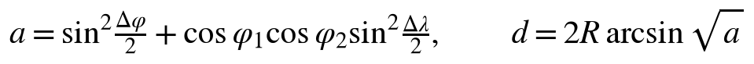
10.2 Bearing and the arrow
The direction from one vehicle to the other is the initial great-circle bearing, obtained from the two fixes with the standard two-argument arctangent form. The second expression then subtracts the driver's own course and wraps the result into the range of plus or minus 180 degrees, giving the angle the arrow must make relative to the vehicle's nose:
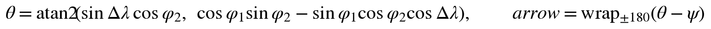
θ is the initial great-circle bearing to the partner, drawn as the dart on the compass ring. While driving, the relative angle α (bearing minus own course, wrapped to ±180°) drives the blinker chevrons, the "at N o'clock" wording (each hour is 30 degrees), and the off-course warning. Course over ground comes from the GPS and is meaningful only at speed, which is why a stopped vehicle switches to compass wording: there is no nose to be relative to.
10.3 Dead reckoning between fixes
Radio updates arrive at most every ten seconds, but the screen renders twice per second, so between packets each vehicle's last fix is projected forward along its last known course and speed. The projection moves the latitude by the northward component of the traveled distance and the longitude by the eastward component, with the cosine of latitude correcting for the fact that lines of longitude converge toward the poles:
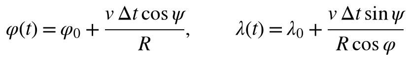
Projection is capped at 120 seconds, beyond which the estimate is no longer trustworthy. The age counter is deliberately not reset by projection: the motion on the screen stays smooth, while the age and the hollow dart tell the truth about how fresh the underlying measurement actually is.
10.4 Closing-speed trend
The trend label tells the driver whether the gap between the vehicles is shrinking or growing. It is driven by an exponential moving average of the rate of change of distance, sampled at every 500-millisecond render tick: each new sample contributes ten percent of the estimate while the history retains ninety percent, and a positive rate means the vehicles are closing:
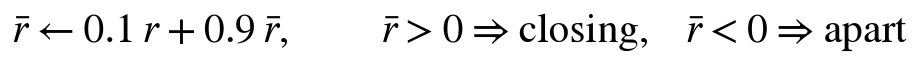
The 0.9 to 0.1 weighting settles in roughly five seconds, which provides enough smoothing that ordinary GPS jitter does not flap the label. The result is displayed as "closing N mph", "apart N mph", or "holding" inside a 2 mph deadband, and it is suppressed entirely while the partner's data is stale, since a trend computed from a projection would be a guess about a guess.
11. Timing, liveness, and honesty semantics (Idea 4)
Nothing in a radio mesh can prove that a silent node is alive, so every liveness indicator in the system reduces to a comparison between the current time and a stored last-heard timestamp. The stock firmware's definition of an online node is exactly one such inequality:
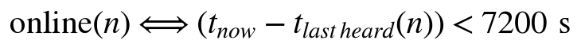
The 7200 s constant is stock firmware: #define NUM_ONLINE_SECS (60 * 60 * 2) in src/mesh/NodeDB.cpp of meshtastic/firmware [3], sized for an ecosystem where solar and battery nodes may legitimately stay silent for hours. The window must exceed the longest honest silence or healthy nodes flap offline; the cost is that a dead radio looks alive for up to two hours. Our traffic contract guarantees a packet at least every 300 s, so the display layers stricter thresholds:
| Indicator | Threshold | Meaning |
|---|---|---|
| SF<->RG OK tag | heard ≤ 90 s | Link actively fresh |
| Hollow dart, inverted age | age > 30 s (partner moving) or > 90 s (partner parked) | Position projected by dead reckoning, not measured; threshold tracks the partner's broadcast cadence |
| DATA STALE banner | age > 120 s | Stop trusting the position |
| Radio OLED "online" | heard ≤ 7200 s | Stock ecosystem bound |
Cadence design rule: every periodic packet names the failure it prevents. Position at 10 s / 20 m moving (tracking staleness), position at 60 s parked (presence), telemetry at 300 s (counter lies), NodeInfo on boot and periodically (names and keys).
12. Range characterization: the two campaigns
Two measurement campaigns bracket the system's real-world envelope, an open-road maximum-range test (2026-10-05) and a canyon no-line-of-sight test (2026-10-18). Together they demonstrate that range is a property of terrain and antenna height, not of the radios. docs/RANGE_TEST_RESULTS.md holds the raw records; every data point is read from video of the live screens.
12.1 Open road (2026-10-05)
Flat farm road north of Lubbock, clear line of sight, in-cabin antennas, one kit parked at the far point. Full two-way tracking held to 3.26 mi (5.25 km): the status page showed LINK CONNECTED with both coordinate sets live, and the displayed distance matched the coordinate delta exactly. The stale edge arrived by 3.75 mi (6.03 km), where position traffic and a text message both failed and both devices flagged it honestly. Against the quoted design range of 3 to 5 km with terrain in the way, the system met the top of the range and ran a kilometer past it. On the return leg, reacquisition was automatic: ages back in the teens by 0.85 mi with the dart at twelve o'clock at 37 mph.
12.2 Canyon terrain, Palo Duro (2026-10-18)
Pre-dawn run at Ceta Canyon Camp, on the Palo Duro escarpment southeast of Happy, Texas, with RG parked at the rim point above Garrison Retreat Lodge (~1,100 m) and SF driving down FM 1721 and west onto the caprock plains, then back. The headline: behind rock the link is intermittent at any distance. Staleness appeared from 1.29 mi, the deepest outage ran seven minutes, and yet single packets were still received past 4.2 mi whenever a ridgeline opened; the age chip resetting from 2 minutes to 1 minute at 4.28 mi, on camera, is one such packet. Recovery was automatic every time: 54 s of age by 2.90 mi inbound, 11 s by 1.45 mi, and the off-course chevrons steered the reunion. The same session measured the other side of the coin: with one antenna elevated on the rim, line-of-sight stretches held to roughly 4.7 mi, past the flat-ground edge, in agreement with the two-ray height arithmetic of Section 5.3.
12.3 Findings
Stale onset by environment on identical hardware: roughly 0.5 mi in town, 1.29 mi behind canyon rock, 3.75 mi on flat open road, and 4.7 mi with one elevated antenna. The measured envelope of this hardware is therefore 0.5 to 4.7 miles with terrain and antenna height as the controlling variables, which is the 20 dB environmental reserve of Section 5.1 made directly visible. Three operational truths follow. The link in broken terrain is intermittent, not binary, so a stale banner is a statement about the current geometry, not a verdict about range. Recovery requires no operator action, only driving until the land opens. And the two displays alarm at different distances by design rather than by any RF asymmetry: a parked partner is judged against the 90 s threshold on the 60 s cadence, a moving one against 30 s on the 10 s cadence (Section 11).
12.4 Measurement method, for whoever runs the next campaign
Log RSSI, SNR, and packet delivery ratio against distance; the radios report RSSI and SNR per packet. Define usable range as a delivery ratio of at least 90 percent over five minutes, equivalently staleness no worse than about 60 s, never as the last packet heard. The remaining planned runs: a calibration pass at short range (a 15 dB gap between measured RSSI and the Section 5 prediction means an antenna or connector problem, not a model problem), the New Mexico open-road maximum where the prediction is now to beat 3.75 mi given any elevation, a preset comparison at the range edge to measure LONG_SLOW's real gain, and a relay test per Section 13. Plot received power against log-distance with the free-space and two-ray lines overlaid; one figure demonstrates the entire analysis.
13. Extending the range
LoRa fails as a cliff, not a fade (Sections 5.3 and 12), so nothing at the receiver can predict the loss; every real fix changes the geometry or adds paths. In order of leverage:
13.1 The high-ground repeater
One node parked on a rim sees down both arms of a canyon and relays between vehicles that cannot see each other; each hop gets the full 161 dB budget. The recipe is ready to run in docs/REPEATER_RECIPE.md and takes one USB session: any Meshtastic-capable 915 MHz node, lora.region US, the Group9 channel URL from the provisioning sheet, device.role ROUTER, owner RPT, and a 900 s position cadence so the parked repeater's own airtime is near zero. The vehicles' radios stay in CLIENT_MUTE exactly as provisioned: vehicle A's broadcast reaches the repeater, the repeater rebroadcasts once, vehicle B hears it one hop later. Airtime roughly doubles per relayed packet, from the measured 5 to 6 percent idle to comfortably under the 25 percent throttle; hop limit 3 is already ample. Verification rules are the scar catalog's: read back every setting, trust the OLED frequency over the CLI, and power-cycle before trusting NVS. Park it where it can see the road to be driven, not where parking is convenient, and recover it at day's end; a battery run flat is scar entries 2 and 10.
13.2 Antenna height
The two-ray arithmetic of Section 5.3 prices it: raising an antenna from 1 m to 3 m is worth roughly 19 dB, more than the entire transmit-power budget, and a whip inside a metal vehicle body costs 10 to 20 dB. A magnetic roof mount is therefore the single cheapest range multiplier available, roughly doubling open-road range and shrinking every canyon shadow, with zero configuration change. The rim measurement of Section 12.2 is this entry measured in the field.
13.3 A third vehicle as mobile relay
The same mechanism as the repeater, opportunistic instead of placed. The mesh already supports it: a third radio on the channel relays within the hop limit with no configuration beyond joining, and the architecture scales to it without redesign (Section 2.6).
13.4 When geometry wins anyway: the honest fallbacks
Two are shipped. The last-known-direction guidance turns every blackout into drive toward where they were, which healed every outage in both campaigns without a button press. And the escalating LINK LOST alarm (Section 9.2) flashes identity, silence duration, and last-known location at three minutes, alternating the loss notice with the recovery action. The display deliberately says LOST rather than out of range, because the receiver cannot distinguish range from terrain from a powered-off partner; it reports the two facts true in every cause.
14. Build, flash, and test procedures
The commands below build the firmware, flash it to a display, open a serial monitor, and run the navigation unit tests on the host computer. Two build environments exist: the real Bluetooth build for hardware, and a simulation build that feeds the interface fake data so the screens can be exercised on a desk without any radios. The notes that follow the commands record the environment-specific traps this project has already paid for.
# build + flash (ALWAYS pass --upload-port; check the SER= MAC first, Section 3) pio run -e display-ble -t upload --upload-port COMx # real BLE build pio run -e display -t upload --upload-port COMx # SIM build: fake data, BOOT cycles scenarios pio device monitor --port COMx --baud 115200 pio test -e native # 12 nav unit tests on the host
- Board flags matter: pioarduino platform,
memory_type dio_opi, flash modedio. QIO silently boot-loops this panel. Do not "fix" it back. - On the project workstation the native tests need MinGW on PATH:
PATH=/c/mingw64/bin:$PATH pio test -e native. - Every serial connection to a radio or display hard-resets it via DTR. Consequences: config writes can silently revert if the port closes mid-save (verify by read-back AND OLED), RAM-only node-table state is lost on each connect, and orphaned monitor processes hold COM ports (kill
device monitorprocesses before flashing). - Bring-up of a new display follows the checklist in
firmware-display/README.md: SIM proof, BLE link, partner tracking, the position-request test (partner parked, age ≥ 30 s, press BOOT, expect the age to snap to seconds), and cased-versus-bare BLE RSSI within 2 dB.
15. Verification record
| Claim | Evidence |
|---|---|
| Two-way link on Group9 | Round-trip traceroutes across multiple sessions: 5.75 to 7.25 dB SNR per direction |
| Position agreement at rest | Two independent fixes 13 to 45 ft apart on one table (consumer GNSS scatter) |
| Live tracking | Display tracked a real drive on first boot; the 10 s moving cadence was proven in the Week 4 drive test |
| On-demand position request | CLI and display-button requests both returned the partner's live fix at full precision |
| Messaging | Canned texts delivered both directions; popup confirmed receiver-side only on hardware |
| Airtime claim | CLIENT_MUTE halved measured idle utilization from 9-13 to 5-6 percent |
| Unit tests | 12/12 navigation-math tests pass on the native host build |
| Two-vehicle drive test (2026-10-04) | Full convoy session on video: live tracking at 17 mph with blinkers and the off-course banner, separation to 0.5 mi and reunion ("closing 13 mph"), messaging both ways, one continuous session with zero reconnects |
| Environment limits observed | DATA STALE onset near 0.5 mi in a built-up area with in-cabin antennas: an environment number, not a range number; consistent with the 20 dB reserve being consumed by car body and buildings |
| Open-road range test (2026-10-05) | Full two-way tracking held to 3.26 mi (5.25 km): LINK CONNECTED with both coordinates on screen and the displayed distance matching the coordinate delta exactly. Stale edge by 3.75 mi (6.03 km), flagged honestly on both devices. Design range of 3 to 5 km met at the top and exceeded by about a kilometer; full data in docs/RANGE_TEST_RESULTS.md |
| Guided arrival (filmed) | On the return leg the display read roughly 700 ft at 10 o'clock, the driver turned to follow, the partner's vehicle entered the windshield view, and the session ended at 25 ft, stopped: the clock-direction guidance verified end to end against ground truth |
| Canyon range test (2026-10-18) | Ceta Canyon, Palo Duro escarpment near Happy, TX (RG at the rim above Garrison Retreat Lodge): DATA STALE from 1.29 mi behind rock, a packet still received at 4.28 mi through a momentary terrain gap (age chip reset 2 min to 1 min on camera), automatic reacquisition inbound (54 s age by 2.90 mi, 11 s by 1.45 mi), CHANGE COURSE chevrons steering the return, one display at uptime 1910 to 2789 s with no reboot. Both radio configs verified clean afterward: the stalls were terrain. Full data in docs/RANGE_TEST_RESULTS.md |
| Rim elevation effect (2026-10-18) | With one radio parked on the Ceta Canyon rim at ~1,100 m, line-of-sight stretches stayed live to roughly 4.7 mi, past the 3.75 mi flat-ground edge, in the same session that produced stalls from 1.29 mi behind rock. One elevated antenna out-ranged two car-height antennas: height, not transmit power, is the dominant range variable, and the measured envelope of this hardware now spans 0.5 to 4.7 mi with terrain and antenna height controlling. This is the quantitative case for the fixed-repeater extension. Note the two displays alarm at different distances by design, not RF asymmetry: a parked partner gets the 90 s threshold on the 60 s cadence, a moving one 30 s on the 10 s cadence (Section 11) |
The two drive tests closed the loop twice over. The 10-04 night drive produced the course-up compass and the cadence-aware staleness cue of Section 9.2, shipped the next day; the 10-05 range test then validated both on the road (dart at 12 o'clock at 37 mph; a parked partner at age 1m displayed calm while a true 2-minute outage displayed inverted and bannered) and converted the Section 5 range prediction into a measurement. In-town versus open-road stale onset, 0.5 mi against 3.75 mi on identical hardware, is the 20 dB environmental reserve made visible. The remaining optional refinement is a repeat with a roof-mounted antenna to quantify the car-body penalty directly.
16. Failure modes and recovery (the scar catalog)
Every entry below happened on this hardware and was reproduced or root-caused before being written down.
| # | Symptom | Root cause | Recovery |
|---|---|---|---|
| 1 | Total mutual silence; configs read back identical; 0 percent channel utilization | Frequency slot mismatch: a channel write silently reverted, leaving the radios on different slots with the same key (Ideas 1 and 2) | Check both OLED LoRa screens: Group9 must read 912.875. Re-apply the channel URL, verify, power-cycle, verify again |
| 2 | Battery ran flat; the radio later boots looking healthy but config is factory or channels are lost | Battery-death crash reverts NVS configuration (observed: one radio lost channels only, one lost everything including keys and name) | Full provisioning recipe. Pre-flight rule: never run radios to empty; check 912.875 before every session |
| 3 | Screen lit, GPS fix shown, but the peer hears nothing for hours and USB serial refuses to connect | Half-alive wedge after a flat battery: the UI runs while LoRa TX and serial are frozen | Full power-cycle. Judge a radio by the OTHER radio's last-heard, never by its own screen |
| 4 | Broadcasts flow but direct messages and position requests time out in one direction, with no NAK | Stale public key: the peer's key regenerated in a factory event; the requester encrypts to the old key; the receiver drops silently | --reset-nodedb on the requester, wait one minute for NodeInfo relearn, retry |
| 5 | "Online" counters lie in either direction; entries stamped months old; distance shows kilometers between adjacent radios | Stale stored timestamps and positions: fixless radios re-broadcasting old fixes, flash-reloaded node records, clock-less boots (Idea 4) | Purge stored positions (--remove-position), sync clocks, reset node DBs. The 300 s heartbeat prevents recurrence |
| 6 | A config write appears to succeed; later reads show the old value | The serial port-close DTR reset rebooted the chip mid-save | Always verify by read-back AND the OLED; for stubborn values use the Python API holding the port open ~20 s |
| 7 | Node table shows nameless ghost entries; freshly learned entries vanish after a USB session | Crash-corrupted records; RAM state wiped by the connect reset before the scheduled flash save | --reset-nodedb, then leave the radio off USB; entries repopulate from live traffic |
| 8 | A Meshtastic radio erased by a firmware upload | An auto-picked COM port hit the radio (shared VID:PID) | esptool erase, factory firmware-heltec-v4 binary at 0x0, then full provisioning; the node number survives (MAC-derived) |
| 9 | A display "will not turn on": no screen, or no USB enumeration on a known-good PC | Power path, not firmware. Observed causes: a USB-C connector that delivers power in only one plug orientation (display 2, damaged VBUS/CC pins on one side); power banks that shut off under the display's milliwatt draw; charge-only cables. A reflective screen in a dim room also reads as dead when it is running | Flashlight test first; flip the USB-C plug (mark the working orientation on plug and case); test with the proven cable on a PC, where enumeration plus the boot log ("RLCD init OK", "remembered radio") proves the board in seconds |
| 10 | Display loops forever on searching/connecting; BLE connects then drops, repeatedly | The radio's NVS reverted bluetooth.mode from NO_PIN to the RANDOM_PIN default, so it demands an authenticated link the display's Just-Works pairing cannot provide. Serial signature on the display: encrypted=1 bonded=0, write failure rc=261 (ATT insufficient authentication), disconnect reason 534. Reverts arrive in batches: the same event (radio idle about a week) also took the channel (OLED back to 906.875), the owner name, and entry 2's other casualties | Re-run the ENTIRE provisioning block in hardware/README.md, never just one setting; verify NO_PIN by read-back and 912.875 on the OLED; the display reconnects by itself once the radio is correct |
Appendix A: acronyms and abbreviations
| Term | Expansion and meaning in this system |
|---|---|
| AES-256 | Advanced Encryption Standard, 256-bit key; encrypts all channel traffic |
| BLE | Bluetooth Low Energy; the in-cab display-to-radio link at 2.4 GHz |
| BW | Bandwidth; RF channel width, 250 kHz here |
| CAD | Channel activity detection; the SX1262's listen-before-talk preamble sniff (Section 6) |
| CSMA | Carrier-sense multiple access; the listen-then-randomly-back-off channel discipline (Section 6) |
| CFR | Code of Federal Regulations; 47 CFR 15.247 governs this band |
| ChUtil | Channel utilization; percent of the last minute the channel carried RF energy |
| CR | Coding rate; forward-error-correction ratio, 4:5 here |
| CRC | Cyclic redundancy check; per-packet integrity checksum |
| dB / dBm / dBi | Decibel ratio / power referenced to 1 mW / antenna gain referenced to an isotropic radiator |
| DM | Direct message; addressed to one node, per-node encrypted |
| DTR | Data Terminal Ready; serial control line whose toggle hard-resets the ESP32 |
| EMA | Exponential moving average; smooths the closing-speed trend |
| FCC | Federal Communications Commission; US radio regulator |
| FSPL | Free-space path loss; the distance term of the link budget |
| GATT | Generic Attribute Profile; BLE's service and characteristic structure |
| GNSS / GPS | Global navigation satellite system / the US constellation specifically |
| ISM | Industrial, Scientific, Medical; the license-free 902 to 928 MHz band |
| LoRa | Long Range; chirp spread spectrum modulation |
| MCU | Microcontroller unit; the ESP32-S3 in every device here |
| NAK / ACK | Negative acknowledgment / acknowledgment; delivery failed / delivered |
| NVS | Non-volatile storage; the ESP32 flash key-value store holding configuration |
| OLED | Organic LED; the radio's small status screen |
| PHY | Physical layer; the radio chip and modulation level of the stack |
| PKC | Public-key cryptography; Curve25519 pairs used for direct messages |
| PSK | Pre-shared key; the channel secret both radios hold |
| RLCD | Reflective liquid crystal display; sunlight-readable, backlight-free panel |
| RSSI | Received signal strength indicator; raw received power |
| SF | Spreading factor (context: modulation); also the callsign of radio 1 |
| SNR | Signal-to-noise ratio; signal height above the noise floor, in dB |
| SMA | SubMiniature version A; the screw-on antenna connector |
| ToA | Time on air; the channel time one packet occupies |
| UUID | Universally unique identifier; names GATT services and characteristics |
| UTC | Coordinated Universal Time; the GPS-supplied wall clock |
Appendix B: repository guide
The project repository is the system's second half; this manual cites its documents throughout. The map, so a new engineer knows where everything lives:
| Path | Contents |
|---|---|
DESIGN.md | The original design document: verified hardware specifications, quantities, risks, and the architecture decision record |
docs/ARCHITECTURE.md | Architecture diagrams and rationale; Section 2 of this manual is its prose twin |
docs/RADIO_PHY_DEEP_DIVE.md | The silicon walk-through with verbatim firmware quotations; Section 4 here |
docs/TELECOM_ANALYSIS.md | Layer-by-layer telecom treatment and propagation models; Sections 5.3-5.4 here |
docs/COLLISION_AVOIDANCE.md | The channel-sharing analysis; Section 6 here |
docs/BLE_LINK_WALKTHROUGH.md | The transport walkthrough with full code excerpts; Sections 8.2-8.7 here |
docs/RANGE_TEST_PLAN.md, docs/RANGE_TEST_RESULTS.md | The measurement campaigns; Section 12 here |
docs/REPEATER_RECIPE.md | The high-ground repeater provisioning recipe; Section 13.1 here |
hardware/README.md | Radio provisioning sheet including the private channel URL (kept out of this manual deliberately) |
firmware-display/ | The custom firmware: protocol/ (BLE link, decode, node table), nav/ and ui/ (mathematics and rendering), sim/ (bench scenarios), test/test_nav/ (native unit tests), include/tracker_state.h (the contract) |
planning/, testing/ | Gantt pipeline and integration/drive-test logs |
Team and ownership: Deo, protocol firmware (BLE client, nanopb decode, TrackerState feed); Josiah, display and navigation firmware; Victor, radio and hardware lead; Cannon, systems and test lead. The ground rules that kept four parallel tracks merge-clean all semester: the TrackerState struct changes only by mutual agreement, everyone flashes their own boards, and all work goes through the repository.
References
- Semtech Corporation, "SX1261/2 Long Range, Low Power, sub-GHz RF Transceiver," datasheet rev 2.2. Sensitivity, SNR demodulation floors, PA ratings. semtech.com
- Meshtastic Project, documentation: "Radio Settings" (frequency slot calculation), "Mesh Broadcast Algorithm" (flooding, CSMA, hop limit, utilization throttle), "Device Roles," "Telemetry," "Encryption," "Client API." meshtastic.org/docs
- Meshtastic Project, firmware source,
src/mesh/NodeDB.cpp,NUM_ONLINE_SECS. github.com/meshtastic/firmware - Semtech Corporation, application note AN1200.13, "LoRa Modem Designer's Guide": time-on-air computation. semtech.com
- 47 CFR § 15.247, operation in the 902-928 MHz band. law.cornell.edu/cfr/text/47/15.247
- AWSW, "Symmetrical case for WaveShare ESP32-S3 4.2inch RLCD," Printables model 1610004, license CC BY-NC 4.0. printables.com/model/1610004
- Group 9 project repository:
hardware/README.md(provisioning recipe and gotcha log),docs/ARCHITECTURE.md,docs/RADIO_PHY_DEEP_DIVE.md,firmware-display/README.md(fleet table and bring-up checklist). github.com/deosgracius/offgrid-vehicle-tracker - R. W. Sinnott, "Virtues of the Haversine," Sky and Telescope, vol. 68, no. 2, 1984: the numerically stable small-angle distance formula used in
nav_compute. - Semtech Corporation, application note AN1200.22, "LoRa Modulation Basics": co-channel rejection and the capture effect. semtech.com
Off-Grid Vehicle Tracker · Group 9, Texas Tech University ECE Capstone · Companion documents: User Manual (concepts) and Device User Guide (screen-by-screen operation).